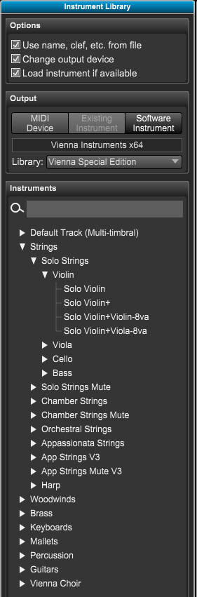

Library Panel
If the Library Panel is not showing click on the Library Panel button at top left of Control Bar or type "Shift-Y" to open the panel.
The Library panel is used to enter new tracks and change existing track's instruments. When you choose a device a list of all known instruments for the device is listed below.
The instruments contain information that Overture uses for displaying the track and how to playback it's symbols.

|
Options - Allows you option when a track's device is changed:
- Use name, clef, etc. - If checked, change the track's notation such as name, clef, etc. using info in the instrument sound map.
- Change output device - If checked, change the track's output device.
- Load instrument if available - If set, for software instruments, a single instance with the actual sample instrument will be loaded.
This is only works for some libraries on the PC for now. Others will be supported in the near future.
Output - The actual MIDI device or Software Plugin to be used:
- MIDI Device - Click to choose the MIDI device.
A pop-up menu will appear display all the current MIDI devices in use as set in the MIDI Settings dialog.
- Existing Instrument - Click here to choose a plugin that is already been used by another track.
A pop-up menu will display all tracks that are using a plugin. Choose the track/plugin mane to share
- Software Instrument - Click here to choose a new software plugin.
A pop-up menu will display all available plugins.
Instruments - The instruments for current MIDI device
- Default track (multi-timbral) - when dragged onto empty space, creates a number (1-16) of tracks with sequential MIDI channel numbers.
When dragged onto an existing track, just changes its output device.
- Tree list of instruments - Drag one of these onto your score to create or replace an existing track.
|
Before we get started lets explain some terms used in advanced music applications like Overture.
A MIDI device is an external MIDI keyboard attached to your computer usually using a USB MIDI cable or one of the two built in General MIDI players.
A software instrument sometimes called a plugin is a piece of software that emulates instruments and is loaded into music applications.
Overture supports two types of software instruments, VST (Virtual Studio Technology) and AU (Audio Units - Mac only)
An instrument is closely related to real world instruments that you commonly know, such as trumpet, clarinet, and piano. Overture uses settings found in the Track Inspector to display and play back the instrument.
Now that we understand the terms let's create some tracks that use them.
To insert a track using a MIDI device or plugin:
- Set the options at the top to determine what settings will be used when the track is created.
- Click on MIDI Device button to choose MIDI instruments or click on the Software Instrument button to choose a VST or AU plugin.
A pop-up menu appears listing all the know MIDI devices or plugins.
- Choose the device or plugin from the pop-up menu.
- For plugins, there is another button just below the main buttons.
Click on this button to choose the associated library (most software instruments only have one library, but some like Kontakt and VSL may have multiple).
When you choose a library, a list of instruments organized as a tree, will appear below. If Overture does not have a sound map for this plugin, on a set of default track instruments will appear.
- From the Instruments list, click on an instrument and drag and drop it onto your score above or below an existing track.
- A new track will be inserted into your score using the chose device or plugin and settings and will use settings from the associated plugin's sound map.
To change a tracks' output device or plugin:
- Set the options at the top to determine what settings will be used when the track is changed.
- Click on MIDI Device button to choose MIDI instruments or click on the Software Instrument button to choose a VST or AU plugin.
A pop-up menu appears listing all the know MIDI devices or software plugins.
- Choose the device or plugin from the pop-up menu.
- For plugins, there is another button just below the main buttons.
Click on this button to choose the associated library (most software instruments only have one library, but some like Kontakt and VSL may have multiple).
When you choose a library, a tree list of instruments will appear below. If Overture does not have a sound map for this plugin, on a default track list will appear.
- From the Instruments list, click on an instrument and drag and drop it onto an existing track.
- The destination's track will now use the new MIDI device or plugin and settings.
Note: Software instruments usually can hold up to 16 instruments and each instrument will use MIDI channels 1 - 16.
For example: One instance of a Kontakt player may have a piccolo using channel 1 and a flute using channel two.
Overture uses the term "share" to describe when two or more tracks use the same plugin.
To share an existing track's plugin:
- Set the options at the top to determine how the new track will be created or changed.
- Click on the Existing Instrument button.
A pop-up menu appears displaying all tracks that are currently using a plugin. You will see track name followed by it's plugin. Ex. Flute - Kontakt 5.
- Choose one of the track - plugin combinations from the pop-up menu. This will tell Overture to use the same plugin for the new track.
A tree list of instruments will appear below
- From the Instruments tree list, choose the instrument.
- Drag and drop the instrument onto an existing staff and the track's device will be changed to the shared device.
- If you dropped the instrument onto an existing track, the track's settings will be replaced. If you dropped onto empty space a new track will be added.
The new track's plugin will now share the chosen track's plugin.
You will now need to do two things to connect the track to the plugin / instrument.
- Open the track's plugin by right clicking on the track.
- Load in the desired instrument sample into the plugin.
- Change the instruments channel to a different channel if needed.
- Open the Track Inspector panel for this track, and set its channel to match the one set in the plugin.
Note: To quickly find an instrument use the search box above the instrument tree.
For more information see All About Tracks.